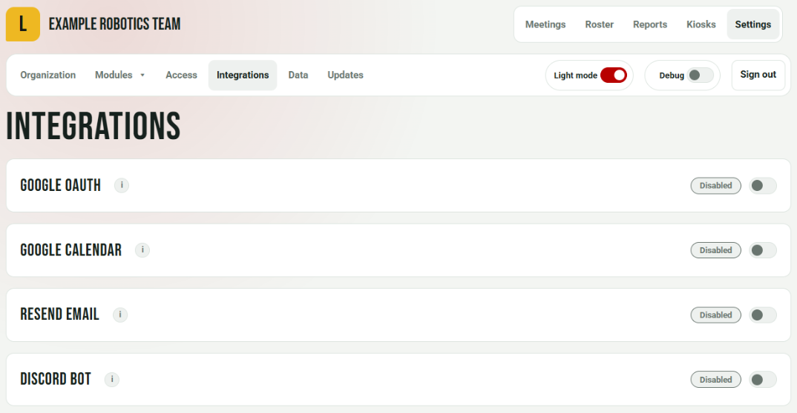

Google Calendar
Connect a calendar you can write to. In a meeting workspace, choose Sync configured calendars to send the meeting's title, notes, and times.
Daily operations
Run meetings, keep the roster current, report on attendance, and look after the installation's data and access.
Admins manage everything, including settings, access, integrations, modules, data, and updates. Operators run the modules they are assigned to: for Attendance, that means meetings, attendance corrections, reports, and kiosk status. Operators can view the roster but not change it. Being on the roster does not give anyone dashboard access.
To give someone access, open Settings › Access, create an Admin or Operator account, and optionally link it to their roster entry. Assign Operators to modules in Settings › Modules › Manage modules.
The primary navigation shows Meetings, a page for each plugin that is turned on, Roster, Reports, Kiosks, and Settings. Admins see these settings pages:
| Settings page | What it controls |
|---|---|
| Organization | Name, subtitle, logo, and colors. |
| Modules | Manage modules turns modules on or off and manages plugins. Attendance has the tabs Attendance rules, Labels, Meeting configuration, Fingerprint sharing, Fingerprint recovery, and Attendance setup. Each plugin has its own page. |
| Access | Admin and Operator accounts and their roster links. |
| Integrations | Google sign-in, Google Calendar, Resend email, and Discord. |
| Data | Backups, restores, and deletion. |
| Updates | The update track and dashboard updates. See Update LancerLogin. |
Each person switches between light and dark with Light mode in the Settings bar. The choice is saved in that browser, and a new browser starts in dark.
Most pages offer a short walkthrough on your first visit. Choose Not now to see it later.
Timing rules that apply to every meeting are in Settings › Modules › Attendance › Meeting configuration.
On Roster, Admins can add one member at a time or import many. To import, upload a CSV or paste spreadsheet rows. A CSV needs the columns Member ID, First name and Last name; Email and Discord user ID are optional. Choose Download template for a starter file. Header names are matched loosely, so First Name, first_name and firstName all work, and other columns are ignored with a warning. Spreadsheet rows pasted without a header must use the template column order.
Making a member inactive keeps their attendance history and any dashboard account. Meetings held while a member is inactive do not count against them.
Admins add, rename, and retire member labels, such as a class or team, in Settings › Modules › Attendance › Labels, and link a label to a Discord role there. They give a label an attendance requirement in Settings › Modules › Attendance › Attendance rules. A meeting can be for all members or only for selected labels.
Reports opens on the Leaderboard, with period, roster, label, and sorting controls, plus attendance alerts and contests waiting for review. Saved reports appear as tabs. Choose + to build a report: pick the period, members, meetings, and columns, then save it for yourself or share it with other staff.
For a monthly class report, choose Current month, the class label, Current membership, and the class's report-period policy result column. Choose Download report CSV to export the selected columns for every matching member. CSV exports store values that look like spreadsheet formulas as text.
Open Settings › Integrations as an Admin. Each integration shows the console link, the exact value to copy into the provider, and a verification step. An integration shows as configured only after verification succeeds, and saved secrets are never shown again.
Connect a calendar you can write to. In a meeting workspace, choose Sync configured calendars to send the meeting's title, notes, and times.
Send missed-meeting emails and individual attendance reports to the email on each member's roster entry.
Member commands, absence notices with a contest button, meeting events, and a kiosk status message.

Google Calendar uses its own OAuth client, separate from Google sign-in. Enter each value in Settings › Integrations › Google Calendar.
https://www.googleapis.com/auth/calendar.calendarlist.readonly and https://www.googleapis.com/auth/calendar.events.https://<slug>-dashboard.pages.dev/api/admin/integrations/google-calendar/callback.If authorization fails, the card shows a message that explains the problem. In Testing, Google ends the authorization after 7 days. For ongoing sync, publish the app (In production) or use an Internal audience. When the card warns that authorization needs renewing, choose Re-authorize Google Calendar.
Enter each value in Settings › Integrations › Resend email.
attendance@example.org. Do not add a display name.The onboarding@resend.dev test sender delivers only to the email address of your own Resend account. If verification fails, the card shows Resend's own reason.
Follow these steps in order. Discord checks the Interactions Endpoint URL when you save it, and LancerLogin can answer only after its credentials are saved. Enter each value in Settings › Integrations › Discord bot.
https://<slug>-dashboard.pages.dev/api/discord/interactions. Paste it into Interactions Endpoint URL on Discord's General Information page and choose Save Changes.If Discord says the interactions endpoint URL could not be verified, confirm that you chose Save credentials first. Then check that the saved public key is from the same Discord application: copy it again from General Information and use Replace saved credentials.
If you use private anomaly reports, add the bot to that private channel with View Channel, Send Messages, and Read Message History.
In Settings › Integrations, save the bot token, Application ID, public key, Server ID, and attendance channel ID, then choose Send Discord verification. LancerLogin checks that the bot token belongs to that application and server and creates or updates exactly the guild-scoped /pair, /attendance-report, /label, /outreach-submit, and /outreach-correction commands. No manual HTTP request or command payload is required.
The Interactions Endpoint URL goes into Discord only after you save credentials, as described in Create the Discord bot. Commands work only in your server and return ephemeral responses, visible only to the member who ran them. /attendance-report reports only on the member's own linked roster entry. The Outreach commands need the Outreach plugin turned on and set up. Exact submission retries reuse the same receipt, and corrections wait for staff review before totals change. If commands go missing, choose Reconcile Discord commands.
Open Settings › Modules › Manage modules. Turning a module on opens its setup. Turning a module off hides its pages at once and keeps its data for seven days before deleting it; turn it back on within that time to keep everything. Adding a new plugin to the installation is an update; see Add, update, or remove plugins.
Some plugins ask to use another module, for example Guest Visits recording visits as Outreach team support. Review and grant that in Settings › Modules › Module access.
Settings › Data has separate backup, restore, and delete controls for Meetings and attendance, Roster, and Entire installation. A file restores only into its own category, and each restore or deletion asks you to type a confirmation phrase.
If fingerprint links have become unreliable, an Admin can reset them in Settings › Modules › Attendance › Fingerprint recovery. Reset all fingerprint mappings removes every member-to-fingerprint link on every paired kiosk as each one reconnects, deletes cloud copies, and turns fingerprint sharing off. Members then enroll again. Roster, attendance, pairing, and badge or QR links are not changed. Reader templates stay on the readers until you use Erase unlinked fingerprints on each kiosk.
Use this when no Admin can sign in with a password. A Google-only Admin recovers access through their Google account instead. Password recovery deliberately does not go through the dashboard. You need a computer with Node.js, a checkout of your private deployment repository, and a Cloudflare API token for the same account.
npm ci.CLOUDFLARE_API_TOKEN to the token and CLOUDFLARE_ACCOUNT_ID to your account ID. Do not save either value in a file.npm run reset-password -- --database <slug>-data --username <admin-username>.passwords_reset: 1 when it worked. A 0 means the username was not found; check it and run the command again.After five wrong passwords, sign-in to that account pauses for 15 minutes. Waiting is enough; you do not need this procedure for a temporary lock. Any Admin who can still sign in can set a new password for another account in Settings › Access.